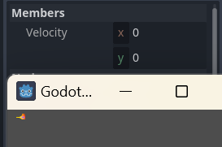
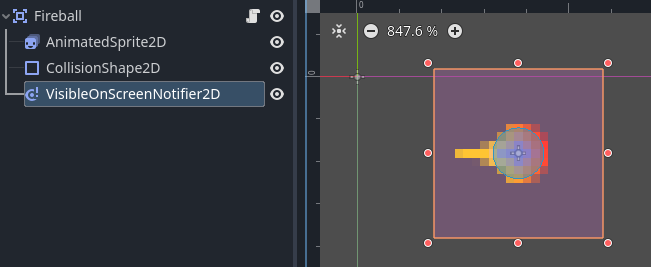
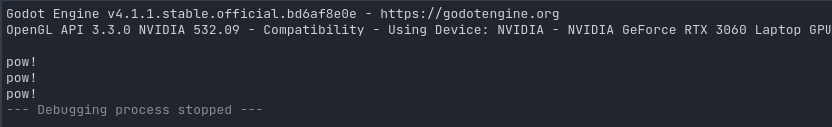
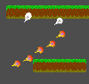
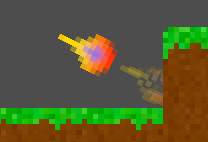

Day 4 - Casting Fireballs
Today we're going to let Zelia cast fireballs.
Want to start from here?
Clone or download the result of day 3 from github
The steps for today
- Add a
Fireballscene and test its flying - Spawn fireballs when she casts
- Make fireballs collide with the
TileMap, not with thePlayer - Generate renditions to make the fireball dissipate
- Why not shaders?
Add a Fireball scene and test its flying
We will use a single .png image as a resource for the fireball. You can download it here:
{kind=link}
Adding the fireball image asset and Fireball scene
- Create a resource dir
res://projectiles/fireball - Place
fireball.pnginside - Create a new
Area2Dscene and call itFireball - Save it in
res://projectiles/fireball/fireball.tscn - Add these child-nodes:
AnimatedSprite2DCollisionShape2D- Add a
SpriteFramesto theAnimatedSprite2D-node - Drag the
fireball.pnginto itsdefaultanimation - Use a
CircleShape2Dfor theCollisionShape2Dand draw it like this:

Although we are using only one image, we are using AnimatedSprite2D, not simply Sprite2D.
This is beacause in step 4 we will generate rendition images dynamically for a 'dissipating' animation.
Let it fly
To make the fireball fly takes a very short script.
Attach a script to the fireball scene by right-clicking Scene > Fireball and picking Attach Script from the context menu.
Leave the defaults in place, and write the script:
extends Area2D
# Initialize the fireball with zero speed (x = 0, y = 0)
@export var velocity = Vector2.ZERO
func _physics_process(delta):
# Update position by velocity-vector
position += velocity * delta
We exported the velocity-property so we can test this code.
Run the current scene by pressing F6.
Wile the scene is running:
1. Go to Scene > Remote > root > Fireball
2. Make sure the game window is visible
3. Find Inspector > Members > Velocity
4. Set x to 50:

This makes the fireball fly out the viewport to the right, never to return.
If we're going to spawn hundreds of thousands of them, it will become a dire memory leak.
Clean it up
To clean up the potential mess, we'll follow some instructions about nodes leaving the viewport from here:
Enemy script from: "My First 2D Game":
Following these steps, we will now:
- Add a
VisibleOnScreenNotifier2D - In the
2Dscene view make sure theRectsurrounds the fireball

- Click on
Nodenext toInspector - Double click
Signals > screen_exited() - Leave defaults in tact and click
Connect - Now add this line to the new function
_on_visible_on_screen_notifier_2d_screen_exited:
func _on_visible_on_screen_notifier_2d_screen_exited():
queue_free()
Run the current scene again by pressing F6 and repeat the remote debugging instructions, setting x to 50
Now look at the node-tree under Scene until the fireball exits the game viewport.
Congratulations, we deleted it.
Spawn fireballs when she casts
If you've looked at the original Zelia game, you know that she does not fire on button-press/click, but on fixed intervals while holding a button:
Add a FireballIntervalTimer
- Go to
FileSystem > player > player.tscn - Add a
Timer-node to thePlayer-node - Name it
FireballIntervalTimer - Go to the
Inspector-tab: - Set
Wait Timeto0.1 - Make sure the
One Shot-property is checkedOff - Check
OntheAutostart-property
This makes sure that the FireballIntervalTimer is activated when the Player is instantiated.
So, in our current case, when the game starts.
- Go to the
Node-tab (next toInspector) - Double-click the
timeout()-signal - Keep the defaults and click
Connect
So now, let's check if our new listener _on_fireball_interval_timer_timeout() is set up properly:
func _on_fireball_interval_timer_timeout():
print("Pow!")
Test by pressing F5, and look at the console:

Ok, so the FireballIntervalTimer works, but she should only shoot fireballs when holding the Fireball button:
func _on_fireball_interval_timer_timeout():
if movement_state == MovementState.CASTING:
rint("Pow!")
That's better. Let's shoot the fireballs next.
Spawning the fireballs
For this section we follow these guides from the godot tutorials: - Instancing - Instancing with signals
The main take-away here is to make sure the Fireball-scene is loosely coupled from the Player-scene; it lives a life of its own.
This also keeps it testable in isolation, like we did earlier.
Add the Fireball scene to the main scene
We will however need to be able to access it from the main scene of our game:
- Open
FileSystem > res://world.tscn - Connect the
Fireball-scene to it by either/or - Dragging
fireball.tscnfrom theFileSystemtab into theWorld-tree - Clicking the
Instantiate Child Scenebutton:

That made one instance of the Fireball-scene as a direct child of the World-scene.
It kinda just sits there, being visible:

We can fix that by toggling off visibility here:

Declare and invoke a signal to "cast spells"
What we're doing next is explained in detail in Instancing with signals.
We're just going to apply here what we learned.
## top of script
# Preload the Fireball class, used to identify it in cast_projectile
var Fireball = preload("res://projectiles/fireball/fireball.tscn")
# Declare a signal to cast a projectile spell (like Fireball)
# in the given direction, from the given origin
signal cast_projectile(spell_class, direction : Vector2, origin : Vector2)
## bottom of script
# Spawn a fireball every 100ms if Fireball button is held
func _on_fireball_interval_timer_timeout():
if movement_state == MovementState.CASTING:
# Signal that a fireball should be cast at casting angle and
# from Player's position
cast_projectile.emit(Fireball, cast_angle, position)
Let the world scene listen to the signal
The main scene of our game (currently World) should get a script with a listener to the casting signal.
Upon that signal, it must instantiate a new Fireball-node and let it fly:
- Go to
FileSystem > world.tscn - Right click the
World-node and chooseAttach Script - Use the defaults and click
Create - Clear the script to one line:
extends TileMap
- Click on the
Player-child-node ofWorld - Pick
Nodenext toInpector - Double click
cast_projectile(...) - Leave defaults to
ConnecttoWorld - Implement
_on_player_cast_projectilelike this:
# world.gd
func _on_player_cast_projectile(spell_class, direction, origin):
var spell = spell_class.instantiate()
add_child(spell)
spell.rotation = direction
spell.position = origin
spell.velocity = Vector2.from_angle(direction) * 150.0
Test the main scene using F5
NOTE: the fireball should come from her belly in the center at this time. If you made the same mistake I did it might spawn out at another place.
FIX: The rootnode Fireball of the fireball.tscn-scene should be in the center of its sprite; it's a subtle grey-plus on the 2D-scene until you click on it.
Fix the fireballs' origin, tweak casting sprites with angle of fireball
So we don't want Zelia to shoot fire from her belly, but from her hands.
This script calculates a new and better origin.
# Spawn a fireball every 100ms if Fireball button is held
func _on_fireball_interval_timer_timeout():
if movement_state == MovementState.CASTING:
# Signal that a fireball should be cast at casting angle and
# from Player's hands
var origin = position + Vector2(14, 0).rotated(cast_angle) + Vector2(0, 2)
cast_projectile.emit(Fireball, cast_angle, origin)
So the var origin is calculated by applying 3 transformations:
1. Create a 'point' at position x=14, y=0 and rotate it by the casting angle: Vector2(14, 0).rotated(cast_angle)
2. Move it relative to Zelia's center (position +)
3. Move it 2 pixels down + Vector(0, 2)
Also, her hands do not match up as nicely with the fireballs as they did in the original game. Use these new angles to determine casting_up and casting_down in get_casting_sprite for better effect:
var casting_up = deg > -160 and deg < 0
var casting_down = deg > 30 and deg < 160
Make fireballs collide with the TileMap, not with the Player
At the moment fireballs still fly out the game window. We want then to collide with the terrain tiles, however.
Let's look at the tutorial once more and apply:
- Open the fireball scene
FileSystem > res://projectiles/fireball/fireball.tscn - Select
Scene > Fireball - Go to
Nodenext toInspector - Double click on the
body_entered(body: Node2D)signal - Leave defaults on and click
Connect - To remove them we could use
queue_free()again:
func _on_body_entered(body):
queue_free()
That works, the fireball collides when it hits the Tilemap. However..
..It will also disappear if it collides with the Player.
Collision Layer and Collision Mask
To illustrate, make set its origin the position-property of the player again in player.gd:
# comment out the next line with Ctrl+k
# var origin = position + Vector2(14, 0).rotated(cast_angle) + Vector2(0, 2)
# replace origin with position in next line
cast_projectile.emit(Fireball, cast_angle, position)
Depending on whether the fireballs are drawn over or behind the Player you will see either/or:
- them pop in and out of existence
- not at all
This is because their Collision Mask overlaps the Collision Layer of the player. The answers here explain it nicely:
What's the difference between Collision layers and Collision masks?
Let's apply what we've learned here like this:
- Player: set both mask and layer to 1 (for now)
- World > TileSet: set both mask and layer to 1 and 2 (for now)
- Fireball: set both mask and layer to 2 (for now)
Player is already set correctly. However, we might want more granularity later.
Setting Collision Layer and Collision Mask for Fireball
This is a set of properties most easily manipulated in the Inpector.
- Select
res://projectiles/fireball/fireball.tscn - Click on the
Fireballnode - Go to
Inspector > Collision - set both mask and layer to 2 (for now)

Setting it for World
But to set it for the World scene, be aware you also need to click on Inspector > Tile Set > TileSet > Physics Layers as it is a property not of the TileMap, but of (one of) its TileSet(s)' Physics Layer(s) --> if you can still follow.

Test again
Press F5 to test if the fireballs do collide with the Tilemap and do not collide with the Player.
Then change back the player.gd script:
var origin = position + Vector2(14, 0).rotated(cast_angle) + Vector2(0, 2)
cast_projectile.emit(Fireball, cast_angle, origin)
Add some smoothness to the collided fireballs
Right now the fireballs disappear very abrubtly because queue_free() is invoked immediately.
We can smoothe this out a little by introducing a delay and slowing them down on impact:
- Go to
fireball.tscn - Give it a
Timerchild node and call itDissipateTimer - Check
Inspector > One ShottoOn - Set the
Wait Timeto0.5 - Change+Add this script to
fireball.gd:
func _on_body_entered(body):
# start the new timer in stead of calling queue_free here
$DissipateTimer.start()
# slow it down to 1/10th the speed
velocity *= 0.1
- Click
DissipateTimer-node - Connect the
Node > timeout()-signal to theFireball - Implement
_on_dissipate_timer_timeout()like so:
func _on_dissipate_timer_timeout():
queue_free()
That's only a little better. We need an animation to make them fade into non-existence slowly.
Generate renditions to make the fireball dissipate
We could make this very ease on ourselves by drawing images manually in our favourite image manipulation program, but we'll do it the lazy way.
Well, that is to say, the programmer's way, a.k.a. the reusable way. Remembering the original game we see a lot of stuff disappear in the same, lazy, reused way. We want to know how, right?
Using Autoload for preprocessing
So looking at the documentation it becomes clear that you can easily manipulate texture images using these two classes: - Image - ImageTexture
But what is less evident is how to do it only one time, in stead of all the 100.000+ times a fireball collides. That would not perform at all.
Luckily, when you search the docs for "Singleton" (my fifth attempt) you find the Autoload-class, which is meant for precisely this:
So, let us apply the steps and the test if we set it up properly.
- Go to
Project > Project Settings > Autoload(4th tab) - Click on the
Node Nameinput - Type in
TextureRenditions, which will be the name of our firstAutoload - Click
Add - In the dialog, leave the defaults, creating a new script
res://texture_renditions.gd - Leave the
Global Variable-checkbox check on toEnable - Close the
Project Settings-dialog again. - Enter this test script in the file
texture_renditions.gd:
extends Node
var singleton_test : String
func _ready():
singleton_test = "singleton_test"
print("asserting this print is called only once")
Run the project with F5 and confirm in the console that yes indeed:
asserting this print is called only once
--- Debugging process stopped ---
Also, test if TextureRenditions.singleton_test is indeed a globally accessible string in fireball.gd:
func _ready():
print(TextureRenditions.singleton_test)
Run the project again and confirm in the console after shooting some fireballs:
singleton_test
singleton_test
singleton_test
singleton_test
--- Debugging process stopped ---
Generate the dissipate animation with Image and ImageTexture
So now we want to prepare the animation for the fireball in our Autoload-node called TextureRenditions. Open the texture_renditions.gd script again.
- Use
preloadto open thefireball.pngtexture and get an instance of itsImage:
extends Node
var fireball = preload("res://projectiles/fireball/fireball.png").get_image()
- Prepare a global array to hold the preprocess images:
var fireball_dissipate : Array = []
- In the
_ready()function add this line:
func _ready():
fireball_dissipate = get_dissipate_renditions(fireball)
- And then write the function
get_dissipate_renditions(...)
# Test if we can make one gray fireball first
func get_dissipate_renditions(src_rendition):
# Create a new Image instance with the same properties as the source image
var dst_rendition = Image.create(src_rendition.get_width(), src_rendition.get_height(), false, src_rendition.get_format())
# Loop through all the pixels
for x in range(src_rendition.get_width()):
for y in range(src_rendition.get_height()):
# Get the original color
var src_color = src_rendition.get_pixel(x, y)
# Set red, green and blue to the red of the source color
# and keep the source alpha transparency
dst_rendition.set_pixel(x, y, Color(src_color.r, src_color.r, src_color.r, src_color.a))
# return a list of one gray-scaled image rendition
# converted to an instace of ImageTexture
return [ImageTexture.create_from_image(dst_rendition)]
- Now edit
fireball.gd, edit_ready()like this:
func _ready():
# Start playing the "default" animation
$AnimatedSprite2D.play("default")
# The sprite_frames of $AnimatedSprite2D is a singleton, so after calling
# add_animation one time, it exists for all other instances
if "dissipate" not in $AnimatedSprite2D.sprite_frames.get_animation_names():
# Add a new animation to the SpriteFrames instance of the $AnimatedSprite2D node
$AnimatedSprite2D.sprite_frames.add_animation("dissipate")
# Loop through all rendition images in the global singleton fireball_dissipate
for rendition in TextureRenditions.fireball_dissipate:
# Add them as a frame to
$AnimatedSprite2D.sprite_frames.add_frame("dissipate", rendition)
- And change the animation on impact in
_on_body_entered:
func _on_body_entered(body):
# play the dissipate animation we coded
$AnimatedSprite2D.play("dissipate")
# start the new timer in stead of calling queue_free here
$DissipateTimer.start()
# slow it down to 1/10th the speed
velocity *= 0.1
Test the project with F5. You should now see gray fireballs after collision:

The actual rendition script
Now that we established a simple list of one gray fireball rendition worked, let's finish up the rendition script in texture_renditions.gd:
func _ready():
fireball_dissipate = get_dissipate_renditions(fireball, 30, 1, 0.25)
# Return a list of dissipating image renditions as an ImageTexture-Array
# - src_rendition is the original Image
# - amount is the amount of times to repeat the rendition effect
# - scatter is the chance of a pixel being rendered again in a given rendeition
# - fade is the factor by which the alpha channel transparency should be reduced
# in each rendition
func get_dissipate_renditions(src_rendition : Image, amount : int = 14, scatter : int = 1, fade : float = 0.5):
var renditions = []
for n in range(amount):
# Create a new Image instance with the same properties as the source image
var dst_rendition = Image.create(src_rendition.get_width(), src_rendition.get_height(), false, src_rendition.get_format())
# Loop through all the pixels
for x in range(src_rendition.get_width()):
for y in range(src_rendition.get_height()):
# Get the original color
var src_color = src_rendition.get_pixel(x, y)
# Copy the source pixel if the random int between 0 and scatter
# hits one
if randi_range(0, scatter) == 1:
# Copy the pixel, reduce opacity by factor fade
dst_rendition.set_pixel(x, y, Color(src_color.r, src_color.g, src_color.b, src_color.a * fade))
# append this rendition to result array
renditions.append(ImageTexture.create_from_image(dst_rendition))
# overwrite the src_rendition variable with a new empty image
src_rendition = Image.create(src_rendition.get_width(), src_rendition.get_height(), false, src_rendition.get_format())
# copy the current rendition into this variable entirely to be
# manipulated in the next iteration
src_rendition.copy_from(dst_rendition)
# return the list of amount renditions
return renditions
Upon testing with F5, we should now see something like this:

Tastes may differ, but personally I enjoy the fact that the random scatter in our renditions makes the fireball dissipate a little differently every time we play the game.
Final touch: show behind parent
The fireball looks nicer if it's not drawn over the tiles (nor anything else). Drawing it behind the tiles (and everything else) makes it look like it really burns the target a little.
There is a checkbox for that as well!
- Open the
Fireballscene - Click the
Fireball-node - Open the
Inspector - Check the
Visibility > Show Behind Parent-property toOn
This works because in our main scene, World, the TileMap is the parent node of the Fireball-instances.
Test again:

Why not shaders?
So, I also tried 2D shaders of the canvas_item type. But my first attempt failed.
You can see my attempt in this branch: Failed shader attempt on github
So the (common) mistake I made was assuming that a shader script would be active on the instance of a fireball, so I attached it to the material of a Sprite2D. But that is not supported yet
What would probably work is to make a hardcoded "dissipate" in our $AnimatedSprite2D.SpriteSet and invoke the script i have from there.
Another thing is the display setting I chose: it mimics pixels, but just look at the picture just above here: it is perfectly rotated (like Mario Maker 2 seesaws). That makes shaders High Resolution.
Tomorrow we should dive into shaders!